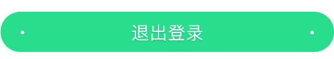

设置
SETTINGS
阅读休息提醒
READ THE REST REMINDERS
关闭
>
推荐偏好
RECOMMENDED PREFERENCES
>
启动后继续上次阅读
CONTINUE READING AFTER STARTUP
清除缓存
CLEAR CACHE
>

阅读休息提醒设置
REAd THE REST REMINDER SETTINGS
关闭阅读提醒
CLOSE READING REMINDER
阅读15分钟后
READ 15 MINUTTES LATER
阅读30分钟后
READ 30 MINUTTES LATER
阅读60分钟后
READ 60 MINUTTES LATER
取消
确定